Navigation: README | 01. Minimal Car | 02. Exterior, Lights & World | 03. Interior, Dashboard & Cameras | 04. Mirrors & Wipers | 05. Sounds & FMOD | 06. Specs, Logic & Reference
In this module, we build out the full cockpit experience:
InteriorObjects Container

+X in the exact same world coordinates and centimeter scale (1:1) as Body..fbx into MyFirstCar/Meshes/.Material Import Method = Do Not Create Material and Build Nanite = False.NoCollision on the Actor (only Body has physical collision), you can leave Generate Missing Collision unchecked.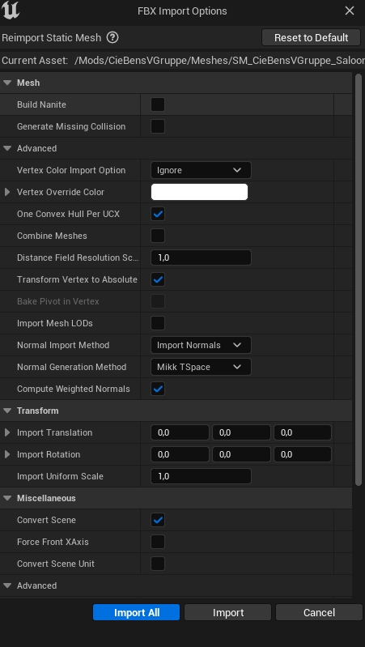
MI_Mod_*)All interior textures must also have Virtual Texture Streaming = True (and Masks (no sRGB) for MRA maps). Create Material Instances from Content/Common/MasterMaterials/VehicleMaterials/ModMaterials/:
| Interior Element | Parent Material | Notes |
|---|---|---|
| Upholstery, dashboard, seats, trim | MI_Mod_Vehicle_Interior |
Primary PBR interior shader. |
| Instrument cluster cover glass | MI_Mod_PanelGlass |
Transparent protective glass over the gauges. |
| Alpha-masked trim (steering wheel wrap, seat stitching) | MI_Mod_Stiches (note spelling: no t) |
Supports opacity masks. |
| Center rear-view mirror housing / dome | MI_Mod_Mirror |
Used for the center mirror casing/housing (not the reflective glass!). |
| Dashboard warning icons | MI_Mod_Emissive_Ikons (spelled with k) |
Recommended to reuse the provided T_Dashboard_D / T_Dashboard_E / T_DashboardMask atlas from CieBensVGruppe/Textures/. |
| Illuminated gauges & needles | MI_Mod_Emissive_Panel |
For needles (SpeedometrArrow, RPMArrow, etc.) and dials (Dashboard). |
| Backlit cabin buttons & switches | MI_Mod_Emissive_Saloon |
Window switches, climate buttons, etc. |


InteriorObjects)V_<ModName>.DefaultSceneRoot → click + Add → Scene and name it strictly InteriorObjects (Location = 0, 0, 0, Rotation = 0, 0, 0).StaticMeshComponent under InteriorObjects with your interior mesh (Collision Presets = NoCollision, Receives Decals = False). Keep other cabin elements (steering wheel, gauge needles, etc.) organized under InteriorObjects.SteeringWheel)(0, 0, 0) with the face of the steering wheel pointing along +Z (rotation axis is Z). Import with no collision and no auto-created materials.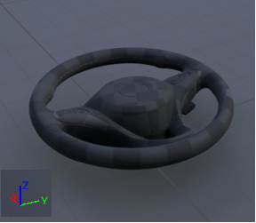
InteriorObjects, add a StaticMeshComponent with your steering wheel mesh (NoCollision).ControlBlock named SteeringWheel (no properties required).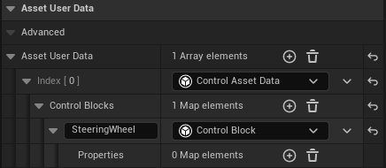
Dashboard): Needles & Warning Icons(0, 0, 0).+Z, and the needle tip points along +X.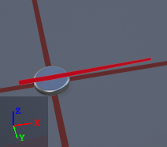
StaticMeshComponent for each needle (under InteriorObjects, NoCollision).Location and Rotation so each needle points directly at the zero (minimum) mark on its dial.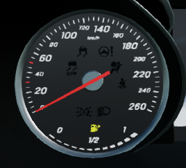
ControlBlock settings for each needle:| Gauge Needle | ControlBlock Name |
Properties (all Control Property Float) |
|---|---|---|
| Speedometer | SpeedArrow |
• MaxAngle — sweep angle (degrees) from zero to max scale• MaxValue — maximum speed on the dial (e.g., 260.0) |
| Tachometer (RPM) | RPMArrow |
• MaxAngle — sweep angle to max scale (e.g., 237.0)• MaxValue — maximum RPM on the dial (e.g., 6000.0) |
| Fuel Level | FuelArrow |
• MaxAngle — sweep angle from empty to full |
| Coolant Temperature | CoolantTemperatureArrow |
• MaxAngle — sweep angle from min to max scale• MinValue — minimum dial temperature (e.g., 50.0)• MaxValue — maximum dial temperature (e.g., 130.0) |
(See Module 1 for a screenshot of RPMArrow configured in Asset User Data.)
SalonLights)Two steps wire up your dashboard warning lights:
Slot Names on Your Interior MeshFor icons, you can reuse T_Dashboard_D (diffuse) and T_DashboardMask / T_Dashboard_E from CieBensVGruppe/Textures/ with MI_Mod_Emissive_Ikons.
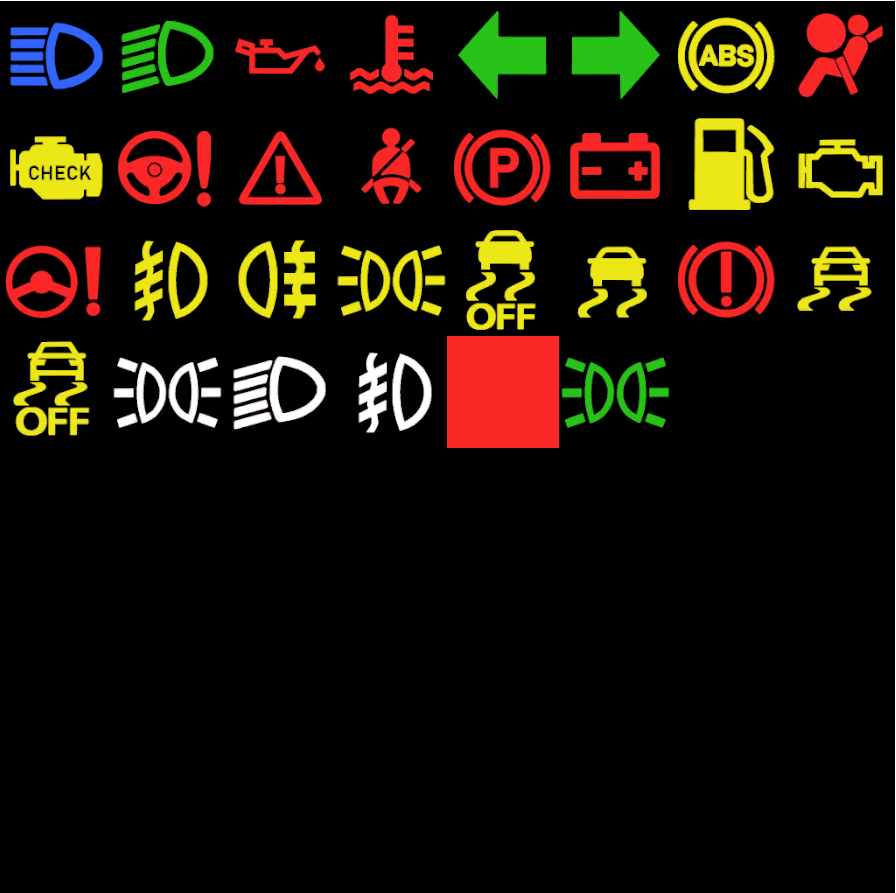
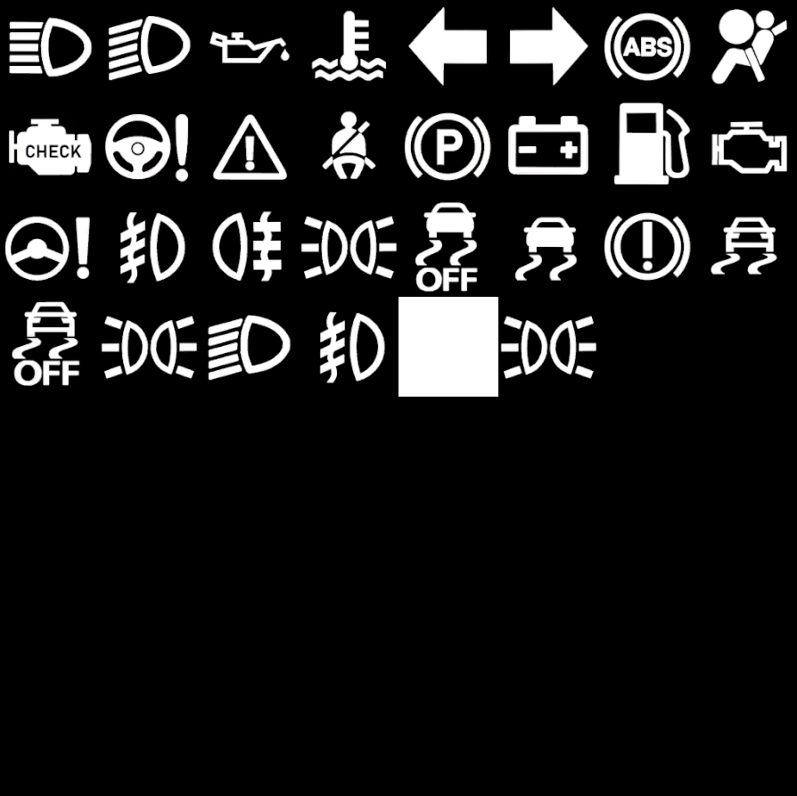
Open your interior (and needle) Static Meshes and set the Slot Name values in Material Slots using the reference table below.
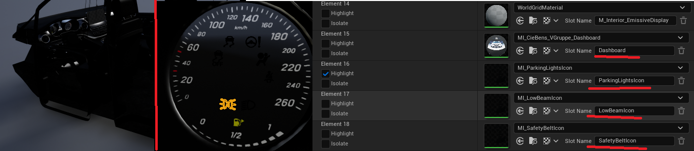
ControlBlock SalonLights (or Copy DashboardController)Fastest option for beginners:
If you don't need custom indicator mappings, open V_CieBensVGruppe, select DashboardController in the Components tree, press Ctrl + C, open your V_<ModName>, and press Ctrl + V! All 23 standard mappings are already configured — you only need matching Slot Names on your interior mesh.
To set it up manually:
SceneComponent (or select your interior mesh) and attach a ControlBlock named SalonLights.Properties, add key-value entries:
*Intensity).Control Property String Array, with one or more material Slot Names in Values.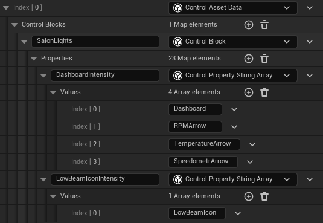
SalonLights)Note the exact slot spelling SpeedometrArrow (missing the e after t) — write it verbatim!
Physics Parameter (key in SalonLights) |
Recommended Material Slot Name |
Purpose |
|---|---|---|
LowBeamIconIntensity |
LowBeamIcon |
Low-beam headlight indicator |
HighBeamIconIntensity |
HighBeamIcon |
High-beam headlight indicator |
ParkingLightsIntensity |
ParkingLightsIcon |
Parking lights indicator |
FrontFogLightsIntensity |
FrontFogLightsIcon |
Front fog lights indicator |
RearFogLightsIntensity |
RearFogLightsIcon |
Rear fog lights indicator |
LeftTurnLightIconIntensity |
LeftTurnLightIcon (or shared TurnLightIcon) |
Left turn signal / hazard indicator |
RightTurnLightIconIntensity |
RightTurnLightIcon (or shared TurnLightIcon) |
Right turn signal / hazard indicator |
HazardLightIconIntensity |
HazardLightIcon |
Hazard button indicator |
SafetyBeltIconIntensity |
SafetyBeltIcon |
Unfastened seatbelt warning |
ParkingBrakeIconIntensity |
ParkingBrakeIcon |
Parking brake engaged indicator |
BatteryIconIntensity |
BatteryIcon |
Battery discharge / alternator warning |
FuelIconIntensity |
FuelIcon |
Low fuel reserve warning |
OilIconIntensity |
OilIcon |
Low engine oil pressure warning |
OverheatIconIntensity |
OverheatIcon |
Engine coolant overheat warning |
EmergencyStopIconIntensity |
EmergencyStopIcon |
Critical "STOP" lamp (stop and shut off engine immediately) |
PowerSteeringIconIntensity |
PowerSteeringIcon |
Power steering fault indicator |
AbsActiveIconIntensity |
AbsIcon |
ABS active / self-check indicator |
AbsDisableIconIntensity |
AbsIcon |
ABS disabled / fault indicator |
TcsActiveIconIntensity |
TCSActiveIcon |
Traction/stability control (TCS/ESP) active indicator |
TcsDisableIconIntensity |
TCSDisableIcon |
Traction/stability control (TCS/ESP) disabled indicator |
AirbagIconIntensity |
AirbagIcon |
Airbag indicator (ignition self-check) |
ExhaustSystemIconIntensity |
ExhaustSystemIcon |
Exhaust system / Check Engine indicator |
CheckIconsIntensity |
CheckIcons |
Ignition self-check channel for decorative warning icons without dedicated logic |
DashboardIntensity |
Dashboard, SpeedometrArrow, RPMArrow, FuelArrow, TemperatureArrow, InteriorButton, MainDisplay, SecondDisplay |
General dashboard, needle, cabin button, and display backlighting |
In-Car Monitors / Infotainment Screens:
There is currently no dedicated interactive monitor workflow for modded vehicles (you can illuminate static screens using the MainDisplay / SecondDisplay slots).
All cameras follow the same pattern: add a component in V_<ModName>, position/orient it, and attach a ControlBlock named Camera.
Camera Type (Type, String) |
Component Type | Optional Properties | Placement |
|---|---|---|---|
ThirdPersonBack |
SceneComponent |
ArmLength (Float, e.g., 600.0) |
Location defines the orbit pivot (typically vehicle center). Rear chase view. |
ThirdPersonFront |
SceneComponent |
ArmLength (Float) |
Location defines the orbit pivot. Front chase view. |
FirstPerson |
CameraComponent or SceneComponent |
None | Driver eye position and rotation inside the cabin (CameraComponent gives a live preview in UE). |
Windshield |
CameraComponent or SceneComponent |
None | Windshield / hood view position and rotation. |
TopDown |
SceneComponent |
ArmLength (Float) |
Place strictly at the center of the vehicle (top-down view). |
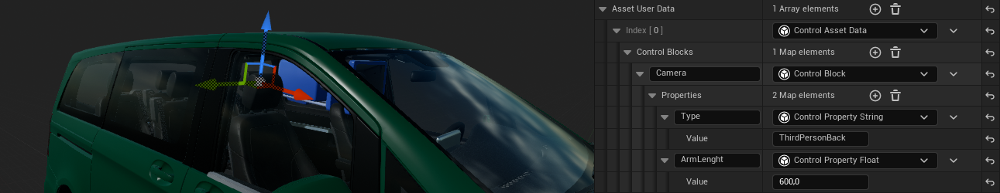
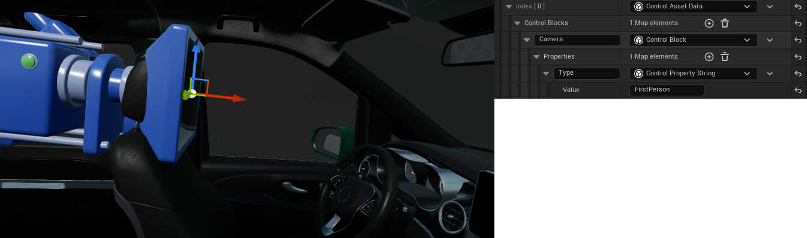


Seats)Currently, only the driver seat is supported in modded vehicles. It uses a socket on the seat/interior Static Mesh paired with ControlBlock Seats.
_Landing Socket on the Static Mesh+ (Create Socket) and name it <SeatSetName>_Landing, e.g., Seat0_Landing.
<SeatSetName> — any Latin identifier you choose (e.g., Seat0)._Landing — required suffix (currently only _Landing is used).+X axis pointing forward parallel to the seat cushion (toward the steering wheel) and blue +Z pointing up.
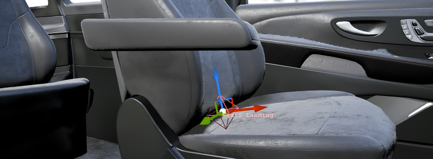
ControlBlock Seats on the ActorV_<ModName> and select the StaticMeshComponent whose mesh holds Seat0_Landing.Asset User Data → Control Asset Data → ControlBlock named Seats:
Names, type Control Property String Array → add Seat0 (just the set prefix, without _Landing!).DriverIndex, type Control Property Int → index of the driver seat in Names (0 for Index [0]).
CarToy)To let players place workshop dashboard toys inside your vehicle:
V_<ModName>, add any component inheriting from SceneComponent (for easy visual alignment, use the included astronaut preview mesh SM_Cosmonaft_Anim from Content/Common/Enviroment/Cosmonaft/ — it helps judge scale and orientation in the editor and is automatically hidden in-game!).NoCollision, place it on the dashboard, and attach a ControlBlock named CarToy (no properties needed).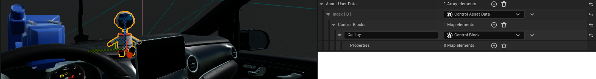
Next step: continue to Module 4. Mirrors & Wipers to add live rear-view mirrors and animated wipers.